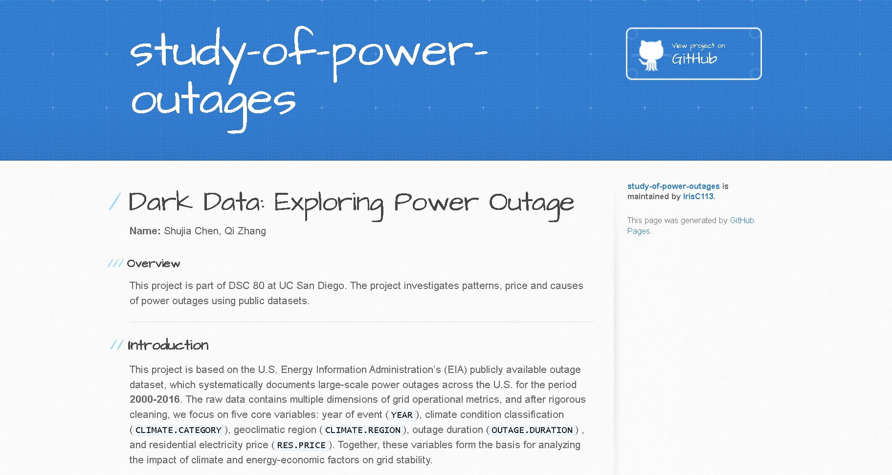
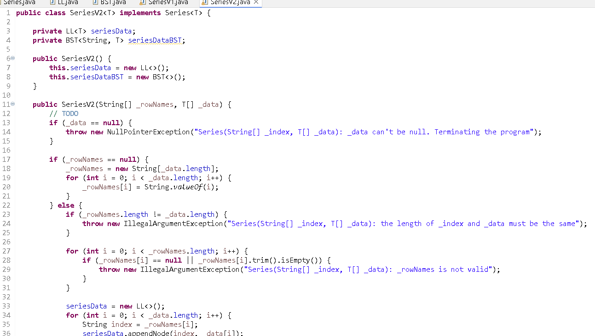
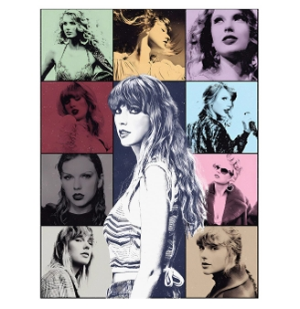

Dark Data: Exploring Power Outage Patterns

Investigated the impact of climate and price on electricity outages using hypothesis testing and a Random Forest Regression model (built with Python/Pandas) to reduce prediction error by 7% and published the actionable results on an interactive webpage for grid resilience policy.
Series/DataFrame Implementation Project

Engineered an object-oriented data manipulation framework in Java, building BST Series and hash table-backed DataFrames using custom data structures (linked lists, BSTs, hash tables) and generics to accelerate Series search from O(n) to O(log n) and enable constant-time DataFrame column retrieval.
Taylor Swift Music Analytics & Recommender

Constructed a music analytics and recommendation platform using Python, babypandas, and NumPy to explore over 200 songs from Spotify and Genius datasets, merging data, engineering Euclidean distance similarity metrics, and generating visualization dashboards to enhance music discovery and data insights.